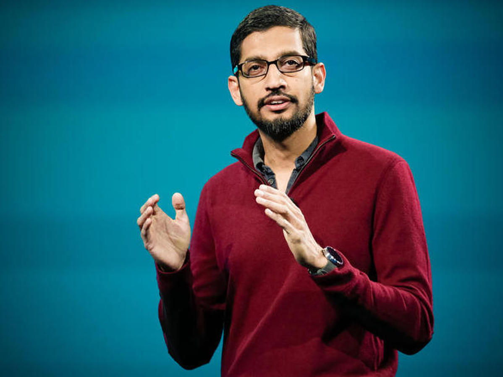

Sundar Pichai
June 10, 1972
A Visionary Leader
Sundar Pichai is a name that resonates with innovation, resilience, and humble leadership. As the CEO of Alphabet Inc., the parent company of Google, Pichai has become one of the most influential figures in the world of technology.Born on June 10, 1972, in Madurai, Tamil Nadu, Sundar Pichai grew up in a modest household in Chennai.Under Sundar Pichai’s leadership, Google has expanded its focus into areas such as artificial intelligence, cloud computing, sustainability, and hardware.
Biographies
- Worked at Applied Materials and McKinsey & Company before joining Google
- Joined Google in 2004,Worked on Google Toolbar and then led the creation of Google Chrome,Later worked on Chrome OS, Google Drive, Gmail, and Google Maps
- Became Vice President of Product Development
- Named CEO of Google in August 2015,Became CEO of Alphabet Inc. in December 2019
- Led the development of Google Chrome, now the world’s most-used browser
- Guided Google’s entry into hardware (Pixel phones, Google Home),Advocated for AI development, sustainability, and internet access globally
- Recognized for calm leadership, thoughtful decision-making, and long-term vision
- Oversaw key products: Gmail, Google Maps, Android, Google Drive, Google Assistant